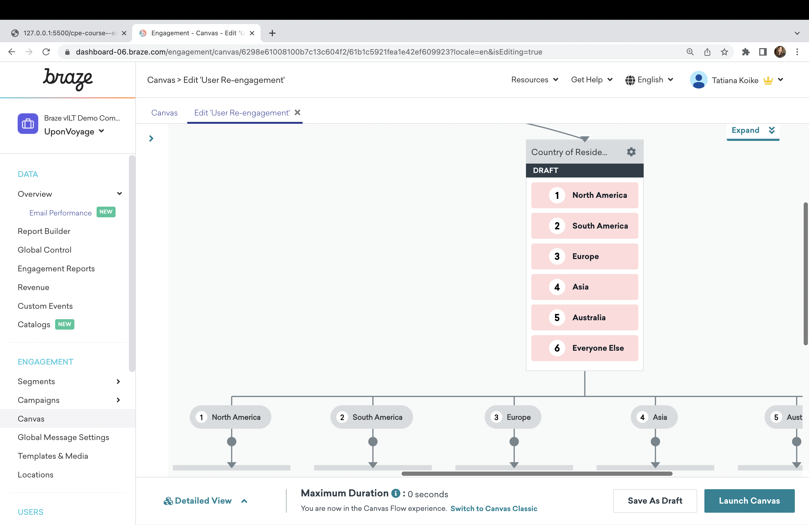

Lesson 2.6
The Audience Paths Component
Send users down different journeys based on their attributes and preferences using the audience paths component.
Key Takeaways
-
Audience Paths
With audience paths, you’ll send users down different journeys based on their attributes and preferences. You’ll define up to 7 audience groups. “Everyone Else” is an additional fallback group for any users who do not meet the criteria for the other groupings.
-
Ranking
Audience paths rank your different groupings, so that if a user falls into multiple audience groups, they’ll go down the path designated as the highest priority.
Component Use Cases
Use Case 1
Tailor messages to users based on their country of residency.
Use Case 2
Provide restaurant recommendations based on a user’s past orders, using multiple audience paths to hone in on your user’s favorite cuisine.

Use Case 3
Assign priority to messages targeting more granular user preference data. For example, users who like a big brand’s shoes will receive a message with shoe recommendations, while users who have only expressed interest in the brand more generally will receive recommendations for a mixture of products.